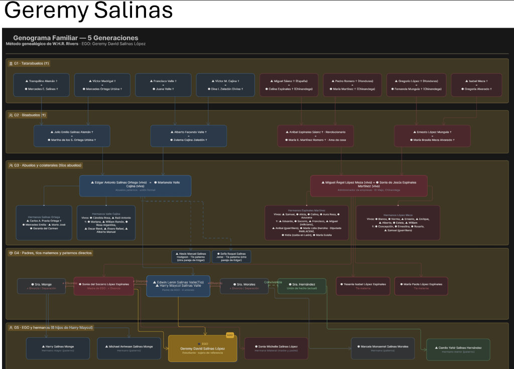
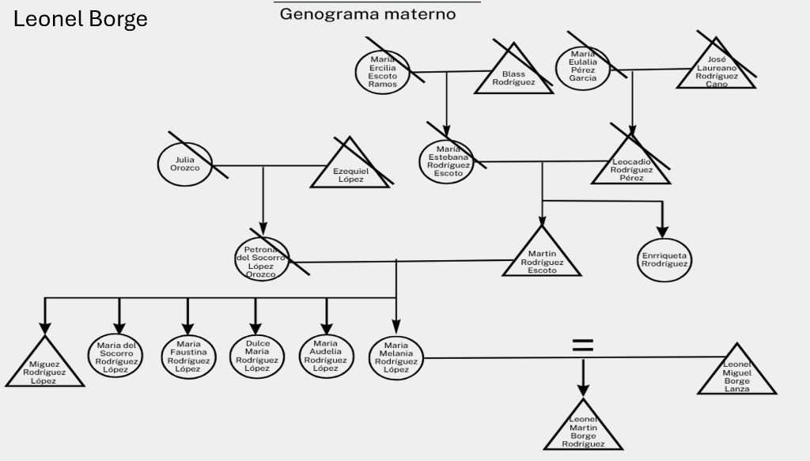
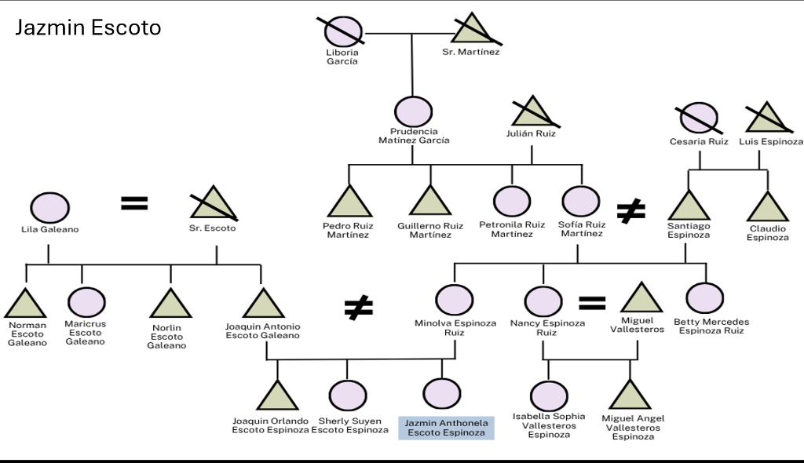
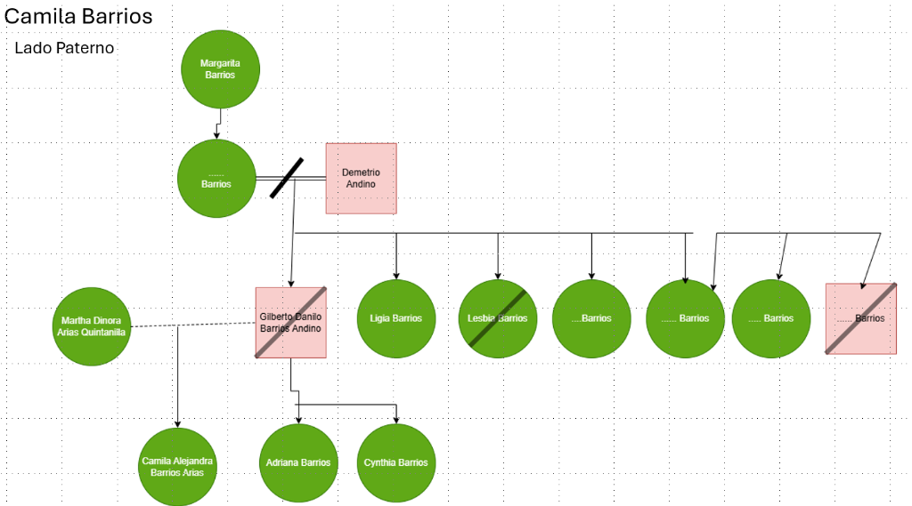

Proyecto de Interculturalidad y Reencuentros Familiares
Investigación etnográfica y genealógica aplicada a cuatro familias nicaragüenses. Un estudio sobre raíces ancestrales, dinámicas migratorias hacia Managua y el diálogo intercultural que forja nuestra identidad compartida.
Memoria: Genogramas Familiares
Reconstrucción gráfica y etnográfica de los árboles genealógicos de las cuatro familias. Haz clic en la vista previa del gráfico o en el botón del EGO (estudiante) para examinar las láminas originales y el desglose de parentesco.
Familia Salinas López

Familia Borge Rodríguez

Familia Escoto Espinoza

Familia Barrios Arias

Tradiciones y Rutas de Migración
Visualización interactiva de las trayectorias familiares desde diversas regiones de Nicaragua hacia Managua, punto de encuentro académico y confluencia cultural.
Migración desde las cálidas llanuras del Pacífico occidental. Tradición marcada por la devoción a la Virgen de El Viejo (cuna de la Purísima) y una fuerte identidad agroindustrial y portuaria.
Migración desde "La Ciudad de Dos Pisos". Patrimonio enraizado en la cultura ganadera, bailes de moros y cristianos de Santiago Apóstol, y reconocidas tradiciones lácteas y culinarias de la zona central.
Migración desde "La Perla del Septentrión". Cultura montañosa cafetalera, rica en polkas y mazurcas campesinas, gastronomía derivada del maíz fresco y fuerte sentido de comunidad norteña.
Migración desde la Meseta de los Pueblos. Cuna del teatro callejero El Güegüense (Patrimonio de la Humanidad), tradiciones de San Sebastián, y gastronomía ancestral de picadillo y chicha de jengibre.
Diversidad: Análisis de Patrones
Contraste analítico entre las prácticas culturales compartidas que forjan cohesión nacional y las divergencias regionales que demuestran el pluriculturalismo nicaragüense.
Patrones Comunes
Todas las familias celebran de manera activa la tradicional fiesta mariana de la Purísima Concepción de María en diciembre. Un fenómeno sincrético que congrega cantos, altares artesanales y la distribución comunitaria de "la gorra" o brindis.
Todas las familias preparan de manera unánime el tradicional platillo de gallina rellena para la cena navideña del 24 de diciembre. Este banquete gastronómico representa el legado colonial adaptado con ingredientes autóctonos en la mesa familiar.
Todas las familias festejan juntas el reencuentro y la despedida del año el 31 de diciembre. Es un ritual colectivo de renovación, estrechamiento de lazos familiares intergeneracionales y esperanza para el porvenir.
Patrones Diferentes
Las cuatro familias provienen de cuatro departamentos con geografías, climas y economías profundamente diferenciadas: Chinandega (Pacífico cálido y costero), Boaco (Centro ganadero y serrano), Matagalpa (Norte montañoso y cafetalero) y Carazo (Meseta fresca y folclórica).
Existe diversidad en el ejercicio espiritual: 3 familias profesan la fe católica y 1 familia profesa la fe cristiana evangélica. Esto evidencia la pluralidad de cultos coexistentes en el contexto social actual de Nicaragua.
En el estudio de linajes, un integrante comparte el apellido Escoto con uno y López con otro, mientras el resto no comparte vínculos nominales directos.
Reflexión Intercultural
Evaluación conceptual sobre la cohesión, la pluriculturalidad y los aprendizajes derivados del estudio etnográfico de nuestras familias.
¿Qué revelan los patrones comunes sobre la diversidad cultural nicaragüense?
Los patrones comunes evidencian que la diversidad cultural en Nicaragua no fragmenta a la sociedad, sino que se articula alrededor de un núcleo de sincretismo festivo y gastronómico compartido. La universalidad de La Purísima, la preparación unánime de la gallina rellena navideña y el ritual de fin de año demuestran que, más allá de los dialectos locales, altitudes o microclimas, las familias han heredado un calendario festivo que actúa como puente de cohesión y fraternidad colectiva.
¿Qué diferencias demuestran que Nicaragua es un país pluricultural?
Las marcadas diferencias territoriales y espirituales comprueban que Nicaragua es un mosaico pluricultural. La coexistencia de 3 familias católicas y 1 familia cristiana refleja la evolución y diversificación de las cosmovisiones religiosas. Asimismo, provenir de cuatro polos geográficos distintos —las llanuras de Chinandega, las serranías de Boaco, los bosques de café de Matagalpa y la meseta cultural de Carazo— aporta vocablos, expresiones vernáculas, formas de trabajo y perspectivas de vida únicas que enriquecen el tejido nacional.